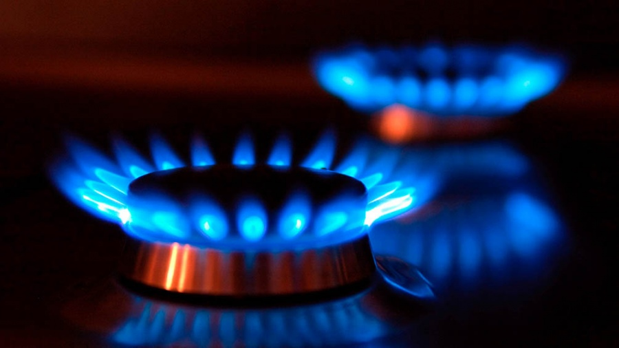

El Ente Nacional Regulador del Gas (Enargas) inició la campaña anual de prevención de accidentes por inhalación de monóxido de carbono y uso responsable de gas, a fin de evitar accidentes por la llegada de las bajas temperaturas y el encendido de los artefactos gasodomésticos.
A través de un comunicado, el organismo precisó que "el monóxido de carbono (CO) es un gas tóxico producto de la combustión incompleta del gas, cuya inhalación provoca lesiones graves a la salud y llegar a ser mortal".
Según se explicó en un comunicado, el gas al ser inodoro, incoloro e insípido, no podemos detectarlo con nuestros sentidos; estas características lo hacen "sumamente peligroso dado que, si se respira, puede causar la muerte por envenenamiento en pocos minutos".
En tanto, señalaron que desde la Gerencia de Recursos Humanos y Relaciones Institucionales del Enargas, se promueven distintas acciones, brindándole a los usuarios información y consejos para "generar conciencia en lo que respecta al uso responsable y eficiente del servicio de gas natural y, en consecuencia, a la prevención de accidentes vinculados a la inhalación de monóxido de carbono".
Asimismo, el organismo con el apoyo de la Asociación de Distribuidores de Gas (Adigas), la Asociación Toxicológica Argentina (ATA) y las distribuidoras de gas natural por redes; ofrece jornadas virtuales de capacitación a lo largo y ancho de todo el país; además de realizar diferentes actividades vinculadas con estas temáticas, por medio de las redes sociales del Organismo.
Por otro parte, destacan que el Ente promueve el interés público y la difusión de esta campaña, ya que es una temática sensible para la comunidad en general.
De tal modo, coordina acciones con Municipalidades, Defensorías del Pueblo y Oficinas de Información al Consumidor de todo el país para alcanzar una mayor visibilidad.
Finalmente, el organismo recuerda que "el mantenimiento de artefactos e instalaciones de las viviendas es responsabilidad particular de cada usuario y usuaria, que se sugiere realizar una vez por año por un gasista matriculado".